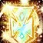
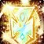

SPÉCIALISATION VINDICTE
SPÉCIALISATION VINDICTE Le Paladin est une classe Polyvalente qui peut être à la fois lanceur de sort, soigneur et attaquant au corps à corps. La particularité de la spécialité Vindicte réside dans ses attaques au corps à corps. Il fait aussi des dégâts avec des sorts de type Sacré. c'est une classe qui peut encaisser les coups de mêlée, mais reste fragile contre les sorts. Il est efficace en monocible et mais pas trop en multicible.
C'est une classe complexe nécessitant de l’anticipation dans la gestion de ses sorts pour ne pas finir sans mana.
En PvP c'est une spécialisation difficile à jouer, car cette classe a moyennement de la survie, mais a quelques controles. Le soucis reste sur les longs combat, où la mana ne suit pas.
Elle est très utile en bg, pas très viable pour de la 2c2 en arène, et moyennement adaptée pour de la 3c3 ou 5c5.
 LES SORTS ET TECHNIQUES LES PLUS UTILISÉES
LES SORTS ET TECHNIQUES LES PLUS UTILISÉES
De dégâts
 Inquisition (inflige des dégâts en fonction de votre arme)
Inquisition (inflige des dégâts en fonction de votre arme) Sceau d'autorité (Chaque attaque de mélée inflige des dégâts de sacré supplémentaires en fonction de 70% des dégats de votre arme, le jugement de ce sceau inflige des dégâts direct de sacré)
Sceau d'autorité (Chaque attaque de mélée inflige des dégâts de sacré supplémentaires en fonction de 70% des dégats de votre arme, le jugement de ce sceau inflige des dégâts direct de sacré) Marteau de courroux (Sur une cible ayant 20% de ses PV)
Marteau de courroux (Sur une cible ayant 20% de ses PV) Consécration (Sert à dps ou trouver un camouflé)
Consécration (Sert à dps ou trouver un camouflé) Sceau de piété (Chaque attaque de mélée inflige des dégâts de sacré supplémentaires, le jugement de ce sceau inflige des dégâts direct de sacré)
Sceau de piété (Chaque attaque de mélée inflige des dégâts de sacré supplémentaires, le jugement de ce sceau inflige des dégâts direct de sacré) Sceau de sang (Uniquement chez les Elfes de sang, les dégâts en mélée infligent des dégâts du sacré égal à 35% des dégâts de l'arme, et le paladin perd un nombre de points de vie égal à 10% des dégâts infligés. Le jugement de ce sceau inflige des dégâts direct de sacré et sacrifie un nombre de points de vie égal à 33% des dégâts infligés)
Sceau de sang (Uniquement chez les Elfes de sang, les dégâts en mélée infligent des dégâts du sacré égal à 35% des dégâts de l'arme, et le paladin perd un nombre de points de vie égal à 10% des dégâts infligés. Le jugement de ce sceau inflige des dégâts direct de sacré et sacrifie un nombre de points de vie égal à 33% des dégâts infligés) Sceau de vengeance (Uniquement chez les Draeneï, Nains et Humains, Les dégâts en mélée applique un DOT sur la cible qui inflige des dégâts de sacré en 15 sec et peut se cumuler 5 fois. Le jugement de ce sceau inflige des dégats du sacré par application de Vengeance sacrée)
Sceau de vengeance (Uniquement chez les Draeneï, Nains et Humains, Les dégâts en mélée applique un DOT sur la cible qui inflige des dégâts de sacré en 15 sec et peut se cumuler 5 fois. Le jugement de ce sceau inflige des dégats du sacré par application de Vengeance sacrée)De soutiens
 Repentir (Stupéfie la cible)
Repentir (Stupéfie la cible) Lumière sacrée
Lumière sacrée Eclair lumineux
Eclair lumineux Epuration (Pour enlever un effet de poison, de maladie et/ou de magie)
Epuration (Pour enlever un effet de poison, de maladie et/ou de magie) Marteau de la justice (Etourdi la cible)
Marteau de la justice (Etourdi la cible) Courroux vengeur (Augmente les dégâts infligés de 30%)
Courroux vengeur (Augmente les dégâts infligés de 30%) Bouclier divin (Rend invincible, on peut toujours attaquer, mais le temps entre les attaques est augmenté)
Bouclier divin (Rend invincible, on peut toujours attaquer, mais le temps entre les attaques est augmenté) Protection divine (Rend invincible, mais on ne peut pas attaquer)
Protection divine (Rend invincible, mais on ne peut pas attaquer) Sceau de justice (Chance d'étourdir la cible avec les attaques en mélée, le jugement de ce sceau empêche de fuir, très utile contre les druides et chaman qui réduit la vitesse de course de leurs formes animal)
Sceau de justice (Chance d'étourdir la cible avec les attaques en mélée, le jugement de ce sceau empêche de fuir, très utile contre les druides et chaman qui réduit la vitesse de course de leurs formes animal) Sceau du Croisé (Augmente la puissance d'attaque et la vitesse d'attaque en mélée, mais vous infligez moins de dégâts, le jugement de ce sceau augmente les dégâts du sacré que la cible subit)
Sceau du Croisé (Augmente la puissance d'attaque et la vitesse d'attaque en mélée, mais vous infligez moins de dégâts, le jugement de ce sceau augmente les dégâts du sacré que la cible subit) Bénédiction de liberté (Confère à un membre ou vous même une immunité aux effets d'immobilisation et de ralentissement pendant 14 sec.)
Bénédiction de liberté (Confère à un membre ou vous même une immunité aux effets d'immobilisation et de ralentissement pendant 14 sec.)  Bénédiction de lumière / supérieure (Augmente les effets des sorts de Lumière sacrée et Eclair lumineux)
 Bénédiction de lumière / supérieure (Augmente les effets des sorts de Lumière sacrée et Eclair lumineux) Bénédiction de sagesse / supérieure (Augmente la regen mana toutes les 5 secondes de 41 points)
Bénédiction de sagesse / supérieure (Augmente la regen mana toutes les 5 secondes de 41 points) 
 Bénédiction de puissance / supérieure (Augmente la puissance d'attaque)
Bénédiction de puissance / supérieure (Augmente la puissance d'attaque) Bénédiction de salut / supérieure (Diminue la menace généré par les attaques de 30%, inutile en PvP)
Bénédiction de salut / supérieure (Diminue la menace généré par les attaques de 30%, inutile en PvP) Fureur vertueuse (Augmente la menace généré, juste un buff en plus à dispel)
Fureur vertueuse (Augmente la menace généré, juste un buff en plus à dispel) Rédemption (Pour rez un ami)
Rédemption (Pour rez un ami) Aura de dévotion (Augmente l'armure) Aura de vindicte (Inflige des dégats du sacré à toute créature qui vous frappe)
Aura de dévotion (Augmente l'armure) Aura de vindicte (Inflige des dégats du sacré à toute créature qui vous frappe) Aura de concentration (confère une chance d'ignorer les interruptions de sorts lorsqu'on vous attaque)
Aura de concentration (confère une chance d'ignorer les interruptions de sorts lorsqu'on vous attaque) Aura de résistance au Givre
Aura de résistance au Givre Aura de résistance au Feu
Aura de résistance au Feu Aura de Croisé (Augmente la vitesse de course de votre monture)
Aura de Croisé (Augmente la vitesse de course de votre monture)
 Les caps et stats
Les caps et statsRappel : Un cap par définition c'est la valeur à partir de laquelle vous n'avez plus aucun intérêt à monter une statistique.
Expliquées par ordre de priorité :
La puissance d'attaque
C'est une stat importante qui n'a pas de cap. Plus vous en avez, mieux c'est. Mais ça ne veut pas dire qu'il faut up QUE cette stat. montez les autres aussi.
Cette stat s'augmente avec de préfèrence de la Force (car elle augmente aussi le score de blocage). Avec 900 de Puissance d'attaque au début vous commencerais à être bien. Ensuite avec le stuff vous monterez vers 1700 de puissance d'attaque unbuff.
Le critique
C'est une stat importante à monter, car c'est cette stat qui vous permet, grace à vos critiques, de faire beaucoup plus de dégâts, grace au talent Vengeance qui augmente les dégâts physiques et du sacré de 5% après un coup critique (cumulable 3 fois, soit 15%).
Monter cette stat va être difficile, je vous conseil un bijoux avec du critique, il n'y a pas vraiment de cap, mais 30% avec les talents suffise. En PvP il vous faut au moins atteindre les 17% de coup critiques de base au début. La vous ferez déjà quelques critiques.
Le toucher
Tout d'abord il faut comprendre que le toucher vous permet d'éviter "les ratés" quand vous frappez vos ennemi que ce soit avec vos coups blanc (attaque automatique), ou même avec vos coups jaunes (Inquisition).
En PvP contre une cible de même niveau vous devrez "théoriquement" avoir 5% de toucher. Vous avez déjà 3% avec vos talents, l'arme à deux mains s2 donne 1,14%, Et vous avez l'enchant de tête de la réputation Expédition cénarienne et l'enchant pied sûr sur bottes. Avec tout ça normalement vous montez au dessus des 5%.
Si vous estimez toute fois que vous faites beaucoup de "raté", essayez d'augmenter votre toucher légérement avec des gemmes.
La résilience
Cette stat est importante en PvP, elle diminue les dégâts des sources de dégâts périodiques (DOT) et les chances de recevoir un coup critique. Diminue aussi les effets des drains de mana et les dégâts des coups critiques.
Pour faire simple le cap de la résilience est de 492.5, au dessus de 500, la résilience ne diminue plus les chances de recevoir un coup critique (diminué de 25% au max). Mais il n'y a pas de cap résilience pour la diminution des dégâts des DOT.
L'endurance
C'est la Stat de la survivabilité, assez importante en PvP. à monter en second plan à la fois avec le stuff mais aussi avec quelques enchant / gemmes, si vous en avez la possibilité.
Pénétration d'armure
Une stat de base utile, qui vous permettra d'ignorer l'armure de votre adversaire. Utile surtout contre les classes à grosse armure, comme le guerrier ou paladin. En PvP c'est la stat que vous monter avec votre stuff. Donc inutile d'en dire plus.
L'expertise
Cette stat ci, comparé au toucher, diminue les chances qu'on esquive ou pare vos attaques de mêlée. C'est à dire que plus vous avez du score d'expertise, moins l'ennemi va esquiver et / ou parer vos attaques.
C'est surtout une stat PvE, mais contre un rogue qui à beaucoup d'esquive, ça peut être utile. Il y a un bijou à la Terrasse des magistère en héroïque qui à du score d'expertise, inutile donc de s'étendre sur le sujet.
Il n'y a pas de "cap" pour cette stat qui est vraiment optionnelle.
Agilité
Stat utile, mais pas rentable pour qu'on la monte. c'est une stat à monter si on a pas d'autre choix, qui vous donnera un peu d'esquive et du critique.
Le score de hate
C'est ce qui vous accélère la vitesse d'attaque.
Cette stat est inutile en PvP, car il en faut beaucoup pour que la stat soit rentable.
C'est une stat utile qu'en PvE.
 L'arbre de talent
L'arbre de talentAvant de commencer vous pouvez voir les talents paladin sur ce site
Les points importants dans la spé Vindicte sont :
 Précision Fureur vertueuse améliorée
Précision Fureur vertueuse améliorée Bénédiction Sceau du croisé amélioré Sceau d'autorité Sceaux sanctifiés Repentir Inquisition (Suivant votre spé)
Bénédiction Sceau du croisé amélioré Sceau d'autorité Sceaux sanctifiés Repentir Inquisition (Suivant votre spé)Vous pouvez cliquer sur les images pour les agrandir.
Vindicte + Marteau de la justice amélioré

Vindicte + Force divine

Vindicte + Rétribution (sans Inquisition)

 Les gemmes
Les gemmesPour ce qui est des enchants et gemmes il vous faut du critique, de la force et si possible de l'endurance, voir de la résilience.
Diamant tonneterre de puissance : +18 Endurance et 5% de résistance aux étourdissements
Il vous faut 3 gemmes bleues pour pouvoir l'activer
Si vous voulez monter votre critique optez pour cette compo :
 +8 critique, ou
+8 critique, ou  +10 critique
+10 critique +8 Force, ou
+8 Force, ou  +10 Force
+10 Force +4 Force +6 Endurance, ou
+4 Force +6 Endurance, ou  +5 Force +7 Endurance x3
+5 Force +7 Endurance x3Sinon passez à cette compo :
+8 critique, ou +10 critique +8 Force, ou +10 Force +4 critique +6 Endurance, ou
+4 critique +6 Endurance, ou  +5 critique +7 Endurance x3
+5 critique +7 Endurance x3 Méta-gemme Diamant tonneterre implacable : +12 Agilité et +3% aux dégâts des critiques
Il vous faut 2 gemmes Bleues, 2 gemmes rouges et 2 gemmes jaune pour l'activer
Si vous voulez monter votre critique optez pour cette compo :
+8 critique, ou +10 critique +8 Force, ou +10 Force +4 Force +6 Endurance, ou +5 Force +7 Endurance x2Sinon passez à cette compo :
+8 critique, ou +10 critique +8 Force, ou +10 Force +4 critique +6 Endurance, ou +5 critique +7 Endurance x2 Les enchantements
Les enchantementsPar ordre de priorité
Casque
Arcanum du paria (+17 Force, +16 Intelligence) Réputation Ville basse Révéré.
Si vous manquez de résilience Arcanum du gladiateur (+18 Endurance et +20 au score de résilience) Réputation Opération Soleil brisé Amical.
Si vous manquez de toucher Glyphe de férocité (+34 à la puissance d'attaque, +16 au toucher) Réputation Expédition cénarienne Révéré.
Epaules
Calligraphie superieures de supérieure de vengeance (+30 à la puissance d'attaque, +10 score de critique) Exalté Aldor
Calligraphie supérieure de la lame (+20 à la puissance d'attaque, +15 score de critique) Exalté Clairvoyant
Calligraphie de vengeance (+26 à la puissance d'attaque) Honoré Aldor
Calligraphie de la lame (+13 score de critique) Honoré Clairvoyant
Torse
Pts vie exceptionnels (+150 point de vie)
Si vous manquez de résilience Résilience majeur (+15 résilience)
Carac. exceptionnelles (+6 à toutes les caractéristiques)
Brassards
Masse musculaire (+12 Force)
Robustesse (+12 Endurance)
ou à la limite Caractéristiques (+4 à toutes les caractéristiques)
Cape
Pénétration des sorts (+20 Pénétration des sorts) Peut vous éviter des résistes à vos sorts comme Marteau de la justice, Repentir ou encore vos sceaux.
Agilité supérieure (+12 Agilité)
ou à la limite Résistance majeure (+7 à toutes les résistances)
Armure majeure (+120 armure)
Jambes
Craft par un Travailleur du cuir
Armure de jambe de cobra (+50 Puissance d'attaque, +12 critique)
Armure de jambe de faille du Néant (+40 Endurance, +12 Agilité)
Armure de jambe en peau de cobra (+40 Puissance d'attaque, +10 critique)
Armure de jambe en cuir-fourchu (+30 Endurance, +10 Agilité)
Gants
Force majeure (+15 Force)
Assaut (+26 Puissance d'attaque)
La Force reste plus rentable, car elle augmente aussi le score de blocage.
Pieds
Pied sûr (+10 toucher et Augmente de 5% la résistance à ralentir et à immobiliser)
Robustesse (+12 Endurance)
Dextérité (+12 Agilité)
Rapidité du félin (+6 Agilité et augmentation de la vitesse de course)
Vitesse du sanglier (+9 Endurance et augmentation de la vitesse de course)
Bagues
Si vous avez enchantement
Caractéristiques (+4 à toutes les caractéristiques)
Arme
Si vous avez une arme à deux mains
Sauvagerie (+70 puissance d'attaque)
Exécutrice (Bourreau) (Proc qui ignore 840 points d'armure de votre adversaire)
Mangouste (Proc qui augmente l'Agilité de 120 et la vitesse d'attaque)
Certains préfèrent Sauvagerie, d'autres Bourreau. A vous de voir.
Bouclier
Pour le switch
Résilience (+12 résilience)
Endurance majeur (+18 endurance)
Résistance (+5 à toutes les résistances)
Légende :
[Button:1] = bouton gauche de la souris
[button:2] = bouton droit de la souris
[nomod] = bouton par défaut du clavier
[mod:alt] = alt + le bouton par défaut
[mod:shift] = shift + le bouton par défaut
[mod:ctrl] = controle + le bouton par défaut
Ces macros sont adapté pour quelqu'un qui joue à la souris, mais vous pouvez les adapter à votre sauce par exemple :
Avec Consécration, version à la souris
Bouton gauche Consécration rang max, bouton droit Consécration Rang 1.
Version bind clavier :
[Touche par défaut] Consécration rang max, Alt+[touche par défaut] Consécration rang 1.
Pour un raccourci clavier il faut indiquer [nomod] pour la touche par défaut, et vous pouvez remplacer alt pour autre chose sur la deuxième ligne.
Notez aussi que si vous ne mettez aucun rang de sort, le rang maximum sera utilisé.
Marteau de la justice et Focus
Bouton gauche Marteau de la justice rang max sur notre cible actuelle, bouton de droite Marteau de la justice rang max sur le focus (Il vous faut pour ça un focus avec /focus). Targetlasttarget vous permet de recibler votre ancienne cible.
Repentir et Focus
Bouton gauche Repentir sur notre cible actuelle, bouton de droite Repentir sur le focus (Il vous faut pour ça un focus avec /focus). Targetlasttarget vous permet de recibler votre ancienne cible.
Inquisition
Lance inquisition et démarre l'attaque automatique en plus de vous équiper votre Libram lié à Inquisition.
Jugement
Bouton gauche Jugement, bouton droit Sceau d'autorité, ce qui vous permet de remettre rapidement un Sceau d'autorité et qui peut être utile dans une phase dps.
Bénédiction de protection et de liberté
/target vous permet de cibler un ami, mais cette partie n'est pas obligatoire. Bouton gauche vous lancez Bénédiction de liberté sur votre cible ou sur vous si vous ne ciblez personne, si vous ciblez quelqu'un et appuyez sur ALT en même temps, le sort se lance sur vous. Bouton droit lance Bénédiction de protection avec le même systême, sur votre cible si elle est dans votre groupe ou raid, sur vous si vous ne ciblez personne, et si vous ciblez quelqu'un et appuyez sur ALT en même temps, le sort se lance sur vous.
Courroux vengeur
Quand on est sur une phase dps et qu'on est sur de pas avoir besoin du Bouclier divin. Utilise votre Courroux vengeur, démarre l'attaque automatique et lance en bouton de droite Fureur vertueuse, Bénédiction de puissance et Sceau du Croisé pour éviter de se faire trop vite dispel le courroux vengeur. Si vous avez déjà ces buffs actif ou si vous êtes sans mana, inutile d'utiliser le /castsequence.
Macro anti controle
Lorsque l'on est sûr de se faire controler (Sheep, cécité, sap, ect...) on peut spammer cette macro pour lancer la bénédiction de sacrifice sur un allier proche, et dès qu'il subit des dégâts, ça vous libère du controle. Maintenant il faut qu'il y ai un allier proche...
Macro anti-rogue/feral
Vous pouvez la spammer dès que vous voyez un fufu en camouflage, la macro va vous permettre de cibler le premier ennemi et de lui appliquer Marteau de la justice (il faut être en face de lui)


 Haut de page
Haut de page